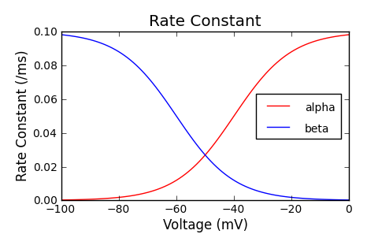
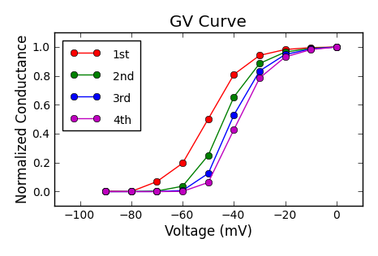
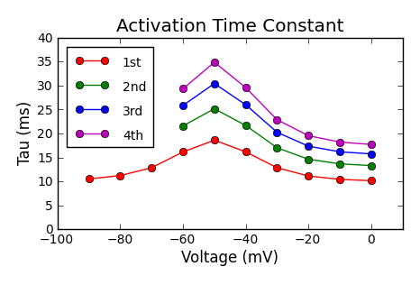
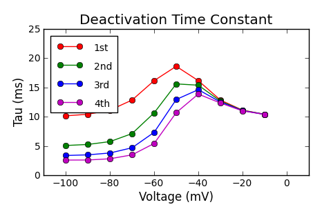
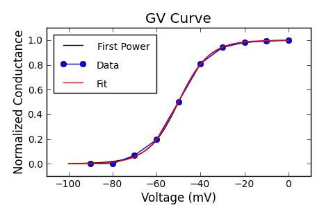
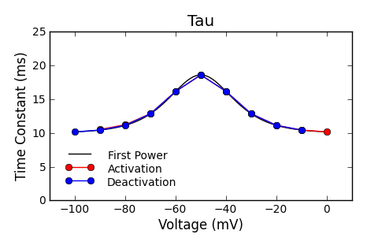
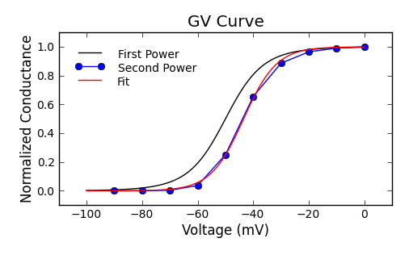
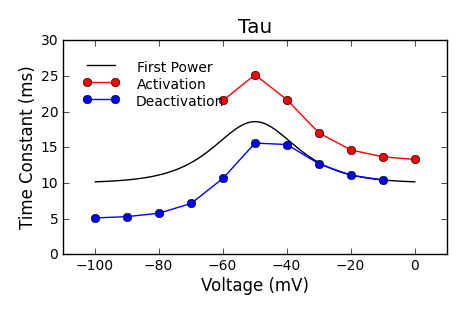

In Hodgkin-Huxley model, power of some gating variables is higher than one. It is important to know how the power of gating variables affects GV curve and time constants. In this note, I used a model potassium current to examine the influence of gating variables' power. You will see that higher power shifts Vhalf to the right and reduces the slope factor, k. Higher power of gating variables also slows the activation but accelerates the deactivation.
Boltzmann's equation is used to descrive the activation rate constant (alpha) and the deactivation rate constant (beta).
Alpha = Alpha0 / (1 + exp((v - (-40(mV))) / (-10(mV))))
Beta = Beta0 / (1 + exp((v - (-60(mV))) /( 10(mV))))
Ginf = Alpha / (Alpha + Beta)
Gtau = 1 / (Alpha + Beta)
|  | The steady-state rates vs. the voltage. Alpha is the rate for the forward direction. Beta is for the backward direction. |
|  | The steady-state conductance is shifted to the depolarizing direction when the power of the gating variable is higher. The slope becomes steeper. |
|  |  |
| Activation time constant is slower with higher gating variable power. | Deactivation time constant is faster with higher gating variable power. |
 
Vhalf = -50.1 (mV), k = -7.1 (mV)
 
Vhalf = -43.5 (mV), k = -5.9 (mV)